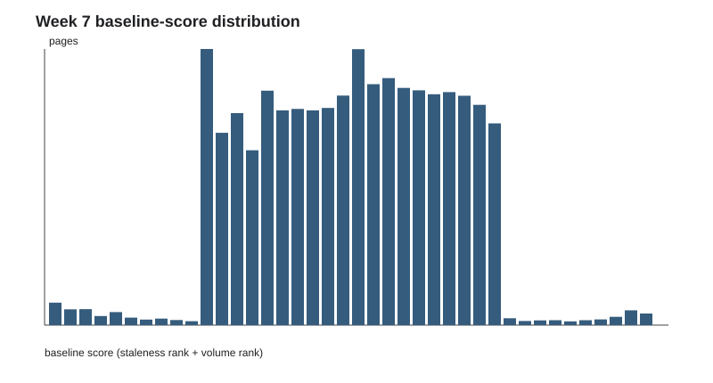
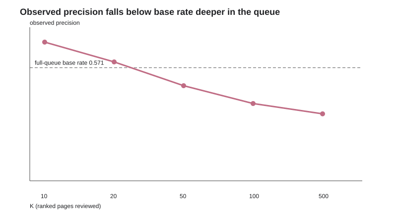

Which Content Pages Should a Reviewer Refresh First?
Abstract
This paper asks whether a content reviewer can use observed March signals to prioritize a short list of pages for refresh review before an observed April impression decline. It evaluates a transparent staleness-plus-volume baseline and a Logistic Regression model on warehouse-backed, leakage-controlled features and a grouped client holdout. The model did not clearly beat the baseline: its grouped-test ROC-AUC was below random, while the baseline remained more useful only at the very top of the full queue. The resulting playbook uses the transparent baseline as a human-review prompt rather than an automated decision system. This work supports a narrow editorial triage decision and reports where the evidence is weak instead of claiming a refresh effect.
1. Question and problem
Can a reviewer prioritize pages to inspect for possible refresh using March 2026 signals before observing an April decline? The decision is which small set to look at first when time is limited—not which pages are “bad,” and not an automated action system.
2. Data
The study uses the FlyRank internship warehouse, with 23936 eligible pages, March 2026 decision-time features, and an April outcome defined as impressions more than 20% below March. Availability flags were filters; identifiers were grouping keys only; future values, outcome labels, product flags, raw traffic-source fields, and starter trend fields were excluded.
3. Methodology
Five leakage-controlled features were tested: trailing seven-day impressions, clicks, average position, scroll events, and static content type. The baseline is staleness_rank + volume_rank; Logistic Regression used the five-feature frame. Evaluation held out client groups rather than randomly splitting rows, so shared client patterns did not appear on both sides. April totals and outcomes were evaluation-only.
4. Results
Both methods were tested on the same grouped client holdout. Logistic Regression was higher at precision@20 and @50 but lower at @10, @100, and @500; its ROC-AUC was 0.463, below random guessing. The playbook therefore uses the transparent baseline only for a short human-review queue.
| K | baseline precision@K | Logistic Regression precision@K |
|---|---|---|
| 10 | 0.700 | 0.600 |
| 20 | 0.400 | 0.700 |
| 50 | 0.600 | 0.680 |
| 100 | 0.670 | 0.660 |
| 500 | 0.770 | 0.654 |
Grouped ROC-AUC: baseline 0.590; Logistic Regression 0.463. Grouped-test base rate: 0.694.

Score distribution of the staleness-plus-volume queue.

Precision starts above full-queue base rate at 10 rows and falls below it deeper in the queue.
5. Limitations and honest framing
6. Ranked recommendations
Every row has reason code staleness_plus_volume. Stale/high-volume pages receive copy, query-fit, and internal-link review; stale/lower-volume pages require demand validation; recent/high-volume pages require technical and intent checks; mixed signals are monitored without automated action.
Reviewers check redesigns, seasonality, temporary measurement changes, and whether analytics matches the reason code. Do not automate publishing, unpublishing, redirects, removal, bulk edits, or deprioritization without human sign-off. Do not act on a single-signal explanation without corroboration.
Run a monthly human-reviewed spot-check. Recheck the rule if fresh precision@10 falls below 0.571, if distributions/base rate shift materially, or if reason codes no longer match analytics.
7. Reproducibility
See Weeks 1–7 and this capstone notebook and the metric receipts under work/outputs/.
5-minute demo outline
- Question: which pages should a reviewer inspect first?
- Method: compare the transparent rule and Logistic Regression with grouped validation.
- Chart: show precision@K falling below base rate deeper in the queue.
- Honest result: the model’s grouped ROC-AUC was below random, so it was not deployed.
- Recommendation: use only a short human-review queue.
Social post
I built a content-refresh triage study using March signals, an April held-out outcome, and client-grouped validation. Logistic Regression did not beat the transparent baseline: its grouped ROC-AUC was below random, despite being higher at two precision depths. The final output is a small human-review queue—not automated content changes.
Employer-facing summary
I built and audited a content-refresh prioritization workflow on a warehouse-backed cohort of 23936 eligible pages. It used leakage-controlled March features, an April held-out observed-decline label, and grouped client validation to compare Logistic Regression with a transparent baseline. The results supported a narrow, explainable review queue and showed why the model was not ready to replace the baseline.
Acknowledgments & data credit
Built on the FlyRank ML Internship dataset.